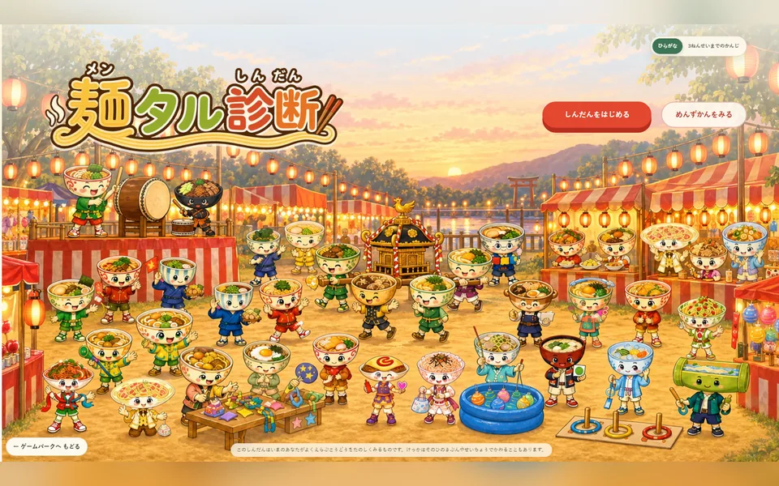

このゲームについて
学校や家で起こる十二の場面を読み、自分の行動に一番近い答えを選びます。結果は六つのめん族と六つの味わいを組み合わせた三十六種類です。家族や友達と結果を見せ合い、違いやよさを話すきっかけにできます。
遊び方
ひらがなまたは三年生までの漢字を選び、十二の質問へ順番に答えます。最後にめんキャラと今回よく選んだ行動が表示されます。正解・不正解はなく、医学や心理学の検査、能力の点数ではありません。
ゲーム中に行うこと
- 十二の場面で自分に近い行動を選ぶ
- 結果を家族や友達と見せ合って話す
ここではゲーム中の活動を説明しています。能力の向上や、特定の効果・改善を保証するものではありません。